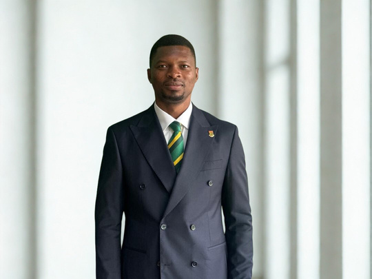

Founder Profile
The Person Behind the Mission
Mumuni Banamwine Imoro (Born February 11, 1986) is a Ghanaian Accountant, Banker, and Governance Professional with extensive experience in finance, corporate governance, banking operations, and economic policy analysis.
Born in Kaleo-Buu, he began his early education in Wa Catholic Junior Secondary School and later attended Nandom Secondary School before pursuing higher studies at Kumasi Polytechnic, where he obtained a Higher National Diploma (HND) in Accountancy, and subsequently earned a Bachelor of Laws (LLB) from the University of Cape Coast.
He Holds Professional Qualifications and Memberships With:
- Institute of Chartered Accountants, Ghana
- Institute of Internal Auditors, Ghana
- Institute of Directors, Ghana
- Association of Certified Chartered Economists / Global Academy of Finance and Management, (USA)
- Chartered Institute of Bankers, Ghana

Mumuni Banamwine Imoro
CA, CEPA, MIoD, ACIB
He has served in senior and leadership roles across the financial and private sectors in Ghana and outside the jurisdiction of Ghana.
Driven by a commitment to social equity and educational empowerment, he established the Foundation to expand access to quality education for vulnerable learners.